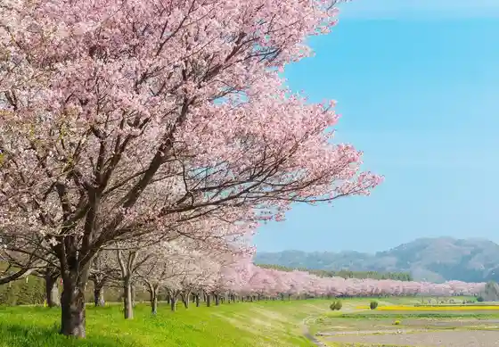
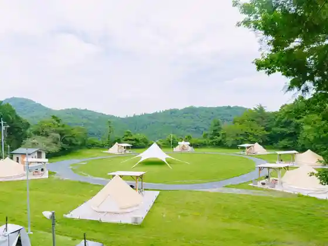
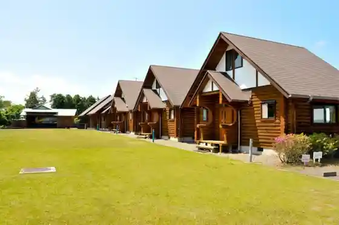
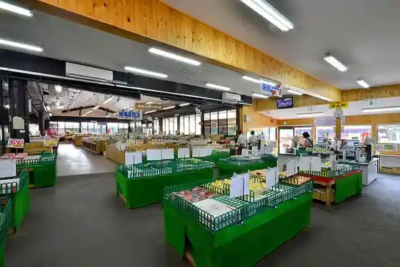

Washi Koyama Ue Shrine (Tori no Kosanjojinja)
Hitachiomiya, Ibaraki · 0287-92-2571 · Official / source link
Tatsu no Kuchi Shinsui Park
Hitachiomiya, Ibaraki · 0295-52-1583 · Official / source link

Zarantan Hitachi Omiya
Hitachiomiya, Ibaraki · 080-5635-8587 · Official / source link

MARUTA Hitachi Omiya
Hitachiomiya, Ibaraki · 090-1245-0868 · Official / source link

Miwa ★ Furusato Kan Hokutosei (Roadside Station (Miwa))
Hitachiomiya, Ibaraki · 0295-58-3939 · Official / source link

Yu no Sawa Kosen
Hitachiomiya, Ibaraki · 0295-57-3794 · Official / source link
PICNIC BASE Hitachi Omiya
Hitachiomiya, Ibaraki · 080-5804-3074 · Official / source link
Gozenyama Onsen Hoyo Center Shiki Sai Kan
Hitachiomiya, Ibaraki · 0295-55-2626 · Official / source link
Yamagatasukoyaka Land Santa Baths
Hitachiomiya, Ibaraki · 0295-57-4126 · Official / source link
Sasa Baths
Hitachiomiya, Ibaraki · 0295-58-2682 · Official / source link
Gozenyama Seishonen Ryoko Village
Hitachiomiya, Ibaraki · 0295-55-2222 · Official / source link
Kami no Sato Nishi no Nai Washi Museum
Hitachiomiya, Ibaraki · 0295-57-2252 · Official / source link
Storm Field Guide Sutomufiirudogaido
Hitachiomiya, Ibaraki · 090-6505-2544 · Official / source link
Roadside Station Hitachiomiya ~ Kawa Plaza ~
Hitachiomiya, Ibaraki · 0295-58-5038 · Official / source link
San O Yama Nature Park
Hitachiomiya, Ibaraki · 0295-52-1111 · Official / source link
Kago Iwa
Hitachiomiya, Ibaraki · 0295-52-1111 · Official / source link
Shiki no Yuyado Umeya Sanso
Hitachiomiya, Ibaraki · 0295-57-4480 · Official / source link
Kyanpingu Garden Iekazu Raku
Hitachiomiya, Ibaraki · 0295-57-9204 · Official / source link
Fudo Taki
Hitachiomiya, Ibaraki · Official / source link
Yasuragi no Sato Park
Hitachiomiya, Ibaraki · 0295-56-2401 · Official / source link
Ogawa Bussan Center Kazaguruma
Hitachiomiya, Ibaraki · 0295-56-3880 · Official / source link
Yoshida Hachiman Shrine Miura Sugi
Hitachiomiya, Ibaraki · Official / source link
Maru Makoto Shokuhin Fune Natto
Hitachiomiya, Ibaraki · 0295-57-3337 · Official / source link
Kyujo Lookout
Hitachiomiya, Ibaraki · 0295-52-1111 · Official / source link
Nature Noho Orchard Aiai Farm
Hitachiomiya, Ibaraki · 0295-57-3208 · Official / source link
O Kashi Tokoro
Hitachiomiya, Ibaraki · Official / source link
Resutoran Kurabito
Hitachiomiya, Ibaraki · 0295-52-1791 · Official / source link
Ohisama no Ichigo Sono
Hitachiomiya, Ibaraki · 0295-55-4415 · Official / source link
O Shiro Lookout (Mijotembodai)
Hitachiomiya, Ibaraki · 0295-57-6020 · Official / source link
Yakiniku Agyo
Hitachiomiya, Ibaraki · 0295-52-6363 · Official / source link
JA Ibaraki Midori Guriinhausu Omiya
Hitachiomiya, Ibaraki · 0295-53-5132 · Official / source link
Ichigo BOX
Hitachiomiya, Ibaraki · 0295-51-3254 · Official / source link
Soba Shoshi Nsui Iori
Hitachiomiya, Ibaraki · 0295-52-1583 · Official / source link
Naka Kantorii Kurabu
Hitachiomiya, Ibaraki · 0295-53-1161 · Official / source link
Konpon Shuzo
Hitachiomiya, Ibaraki · 0295-57-2211 · Official / source link
Hitachi Farm
Hitachiomiya, Ibaraki · 0295-56-3078 · Official / source link
Gofukuya
Hitachiomiya, Ibaraki · 0295-55-3919 · Official / source link
Tsuzuku Farm
Hitachiomiya, Ibaraki · 0295-55-3040 · Official / source link
Manpuku Tera Cherry Blossoms
Hitachiomiya, Ibaraki · 0295-58-2645 · Official / source link
Azareakantorii Club
Hitachiomiya, Ibaraki · 0295-56-3131 · Official / source link